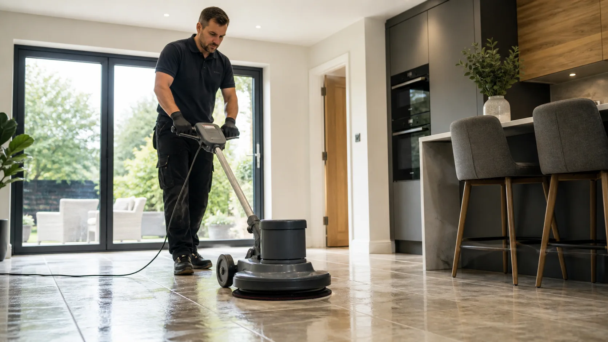

Tile and grout
Ceramic and porcelain tiled floors, grout lines, kitchens, bathrooms, halls and utility rooms.
JW Carpet Care provides hard floor cleaning in Kidderminster for hard working floors in homes, rentals, shops, offices and communal spaces. The service is built around careful inspection, the right cleaning method for the floor type and a clean, presentable finish without making unrealistic promises.

Hard floor cleaning is not just a quick mop. The floor type, grout lines, coatings, edges and traffic marks all need checking before the clean starts, so the method fits the surface.
Mopping can move soil around, but it often struggles with grout lines, textured tiles, greasy kitchen build-up and traffic marks near entrances. A professional clean focuses on loosening the soil, rinsing it away and leaving the floor looking brighter and easier to maintain.
This section is written for real customer searches: tiled floor cleaning, grout cleaning, hard floor cleaning, LVT cleaning, vinyl floor cleaning and stone floor cleaning where the surface is suitable.
Ceramic and porcelain tiled floors, grout lines, kitchens, bathrooms, halls and utility rooms.
Suitable natural stone floors assessed carefully before cleaning so the method matches the material.
Cleaning for vinyl and luxury vinyl floors affected by dullness, residue and everyday traffic.
Entrance areas, toilets, kitchens, walkways and customer-facing floors that need to look smarter.
The floor is checked for type, condition, problem areas, coatings and any risks before cleaning.
Suitable cleaning solution is applied to help loosen soil, grease, residue and marks.
Edges, grout lines and textured areas are worked carefully to release embedded dirt.
The loosened soil is removed and the floor is left cleaner, brighter and more presentable.
Choose the closest area or related service below. These pages are set up to help customers find the right local service without reading repeated copy.